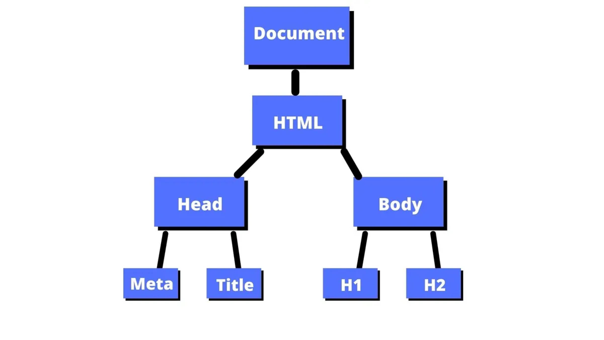
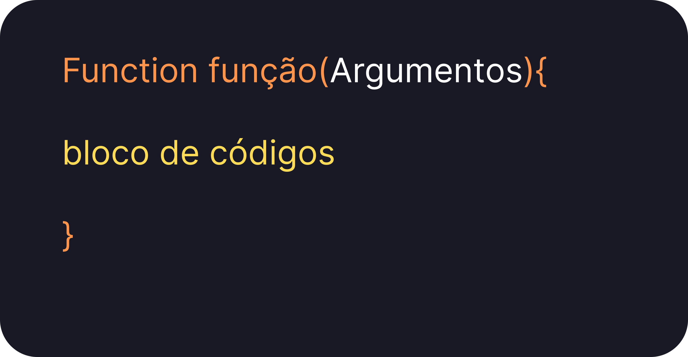
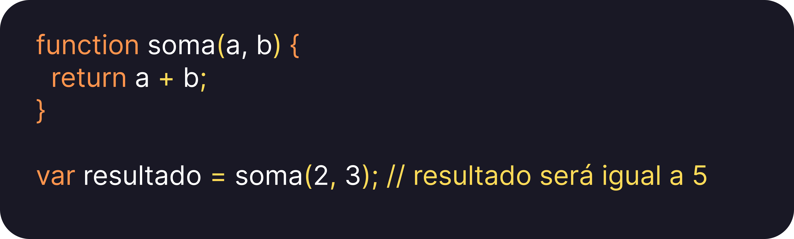

O Document Object Model (DOM) é uma representação em árvore de todos os elementos HTML em uma página web. O DOM permite que o JavaScript acesse, manipule e atualize dinamicamente o conteúdo e a estrutura da página web. Em outras palavras, o DOM é a interface que permite que o JavaScript interaja com os elementos HTML na página. Ao utilizar o JavaScript para manipular o DOM, é possível adicionar, remover ou alterar elementos na página de forma dinâmica, sem a necessidade de atualizar a página. Para manipular o DOM, o JavaScript utiliza uma série de métodos e propriedades que permitem que os elementos sejam selecionados e modificados de forma programática.
A história do JavaScript remonta ao início da década de 1990, quando o programador Brendan Eich foi contratado pela Netscape Communications Corporation para criar uma linguagem de script para o navegador Netscape Navigator. A linguagem foi inicialmente chamada de Mocha, depois renomeada para LiveScript e finalmente rebatizada como JavaScript.
A sintaxe básica do JavaScript é semelhante à de outras linguagens de programação, como Java e C++. No entanto, o JavaScript tem uma sintaxe mais flexível e menos rigorosa em relação à tipagem de dados, o que o torna mais fácil de aprender e utilizar. Em JavaScript, as funções são blocos de código que podem ser executados repetidamente em diferentes partes do programa. As funções podem receber argumentos e retornar valores, permitindo que sejam usadas para realizar tarefas específicas de forma modular e organizada.
As funções em JavaScript são definidas utilizando a palavra-chave "function" seguida pelo nome da função e uma lista de argumentos entre parênteses. O corpo da função é definido dentro de chaves e pode conter qualquer código JavaScript válido. Por exemplo:
